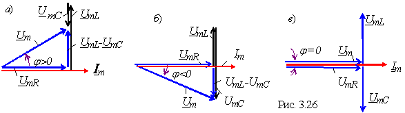

Вид векторной диаграммы напряжений и тока и характер электрических процессов, протекающих в цепи, зависят от соотношения сопротивлений XL и XC:
а) при и UmL > UmC цепь носит резистивно-индуктивный характер, т. е. ток i отстает по фазе от напряжения u на угол φ (рис. 3.26, а);
б) при и UmL < UmC цепь носит резистивно-ёмкостный характер, т. е. ток i опережает по фазе напряжение u на угол φ (рис. 3.26, б);
в) при и UmL = UmC имеет место явление резонанса и цепь для источника напряжения - чисто резистивная нагрузка; угол φ = 0 (рис. 3.26, в).
